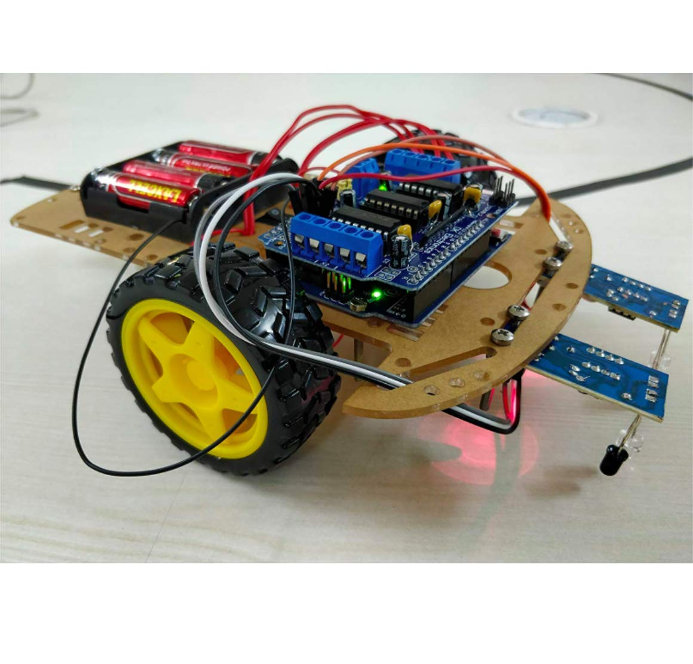

Developed an autonomous line-following robot capable of detecting and following a black line on a white surface using sensors and the LM923D module. The robot utilized an Arduino microcontroller to process sensor data and adjust the motor control to stay on the track.
Learn More